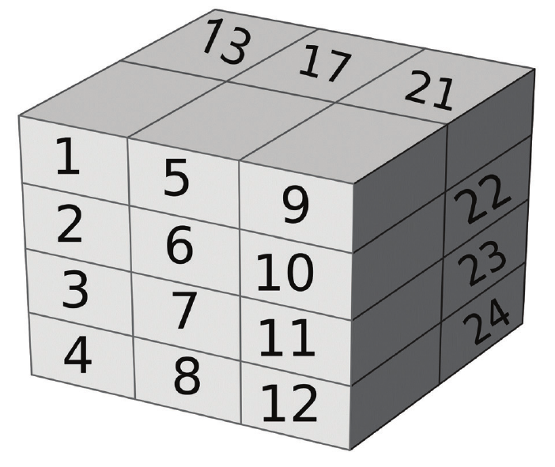

数组
在前一章中，我们了解了简单数组以及其他形式的集。我们还遍历了集。然而，在Julia中，数组在提供高性能容器方面扮演着重要的角色，这些容器是由内存管理的，能够在本机应用程序之间传输数据。本章，我们将看看数组的一些高级应用。有时，操作是在数组上定义的，或者通过简单的语法修改可以执行复杂的数组操作。
容器
数组是用于各种操作的最常见集，因为它们是可变的、可扩展的，并且在正确使用时是高效的。本章讨论的一些主题对于新手来说可能是高级的。因此，在你积累语言经验的同时，建议你稍后再复习本章的部分内容。
向量作为容器是一种非常常见的用例。一些数据结构，如堆栈、队列、二进制堆通常使用一维数组或向量来实现。Julia提供了简单的函数来处理这些情况。下面展示了将向量用作堆栈的示例。
julia> a = []Any[]julia> push!(a, 5)1-element Vector{Any}: 5julia> push!(a, 5, 6, 7, 8)5-element Vector{Any}: 5 5 6 7 8julia> pop!(a)8
上述方法对向量按照堆栈的方式进行修改。在操作结束时，还可以使用empty!(vector)方法清空容器。
julia> length(a)4julia> isempty(a)falsejulia> empty!(a)Any[]julia> isempty(a)true
让我们看看数组作为队列的操作方式。
julia> push!(a, 1, 2, 3, 4, 5)5-element Vector{Any}: 1 2 3 4 5julia> popfirst!(a)1julia> pushfirst!(a, 1)5-element Vector{Any}: 1 2 3 4 5
pushfirst!(v, value)是一种将值添加到向量开头的方法。
尽管pushfirst!和popfirst!方法是存在的，但它们不是最有效的，因为插入和删除第一个元素可能需要复制或移动元素。
维度
数组可以是任意维度的。虽然我们在前面主要学习了向量(1维)和矩阵(2维)，我们将在本章更多地了解一些高维数组。
julia> a = reshape(collect(1:24), 4, 3, 2)4×3×2 Array{Int64, 3}: [:, :, 1] = 1 5 9 2 6 10 3 7 11 4 8 12 [:, :, 2] = 13 17 21 14 18 22 15 19 23 16 20 24julia> ndims(a)3julia> size(a)(4, 3, 2)julia> size(a, 3)2
reshape接受一个集并创建指定形状的数组。ndims给出数组的维数，而size给出每个维中的元素数。size(array, dim)给出在特定维度的大小。数组的内存布局如下图所示：

索引
数组使用表达式A[I_1, I_2, ..., I_n]索引。I_i是我们将在本节中探讨的各种类型的索引。
常量
索引表达式的最简单形式是标量或数字。下面是一些例子：
julia> a = reshape(collect(1:24), 4, 3, 2, 1)4×3×2×1 Array{Int64, 4}: [:, :, 1, 1] = 1 5 9 2 6 10 3 7 11 4 8 12 [:, :, 2, 1] = 13 17 21 14 18 22 15 19 23 16 20 24
范围
索引表达式也可以是范围。冒号(:)表示维度中的所有索引。
julia> a[:, 1, 1, 1]4-element Vector{Int64}: 1 2 3 4julia> a[2:3, 1, 1, 1]2-element Vector{Int64}: 2 3julia> a[1:2:3, 1, 1, 1]2-element Vector{Int64}: 1 3
可以看到，范围对象可以是任何整数范围类型，如UnitRange、StepRange等。索引表达式也可以使用多个范围索引。这会产生多维数组，其中的元素是从范围中指定的位置提取的。
julia> a[1:2:3, 1:2:3, 1, 1]2×2 Matrix{Int64}: 1 9 3 11
向量
当索引表达式是向量或非标量时，输出将引入额外的维度。下面是一些例子：
julia> a[1:2:3, 1:2:3, [1], [1]]2×2×1×1 Array{Int64, 4}: [:, :, 1, 1] = 1 9 3 11
如上例所示，创建的是2×2×1×1数组，而不是2×2数组。默认情况下，索引向量是一维行向量。
julia> a[1:2:3, [1; 3], 1, 1]2×2 Matrix{Int64}: 1 9 3 11julia> a[1:2:3, [1, 3], 1, 1]2×2 Matrix{Int64}: 1 9 3 11
当索引不是按行顺序排列时，输出将无法合并为2×2矩阵：
julia> b = a[1:2:3, [1 3], 1, 1]2×1×2 Array{Int64, 3}: [:, :, 1] = 1 3 [:, :, 2] = 9 11
生成了一个2×1×2的矩阵。类似地，可以通过提供多维索引来创建更复杂的矩阵。
julia> a[:, [2], [1], [1]]4×1×1×1 Array{Int64, 4}: [:, :, 1, 1] = 5 6 7 8julia> a[[1 2; 3 4], [2], [1], [1]]2×2×1×1×1 Array{Int64, 5}: [:, :, 1, 1, 1] = 5 6 7 8
这里，在第一个索引中引入多维索引为矩阵增加了一个额外维度。矩阵具有2×2×1×1×1维度。前2列是对第二列a[:, [1], [1], [1]]基于索引参数[1 2; 3 4]的重排列。
线性索引
我们在前一章讨论过，数组以行为主的方式存储在一个连续的内存位置，索引指向底层数据。底层数据可以用单个整数索引访问。这种索引称为线性索引。
julia> a = reshape(collect(1:6), (2, 3))2×3 Matrix{Int64}: 1 3 5 2 4 6julia> a[5]5julia> a[1, 3]5
有一个叫做LinearIndices的类型可以帮助创建这种映射。
julia> LinearIndices(a)2×3 LinearIndices{2, Tuple{Base.OneTo{Int64}, Base.OneTo{Int64}}}: 1 3 5 2 4 6
笛卡尔索引
笛卡尔索引是一个数字元组，作为数组的维数，代表一个元素。
julia> A = reshape(collect(1:6), 3, 2)3×2 Matrix{Int64}: 1 4 2 5 3 6julia> ci = CartesianIndices(A)3×2 CartesianIndices{2, Tuple{Base.OneTo{Int64}, Base.OneTo{Int64}}}: CartesianIndex(1, 1) CartesianIndex(1, 2) CartesianIndex(2, 1) CartesianIndex(2, 2) CartesianIndex(3, 1) CartesianIndex(3, 2)
使用笛卡尔或线性索引取决于对象和数据的组织。稍后，我们将通过查看视图和子数组来进一步了解这些主题的细节。
布尔索引
布尔索引的作用更像是数据的过滤器。
julia> x = reshape(collect(1:16), 4, 4)4×4 Matrix{Int64}: 1 5 9 13 2 6 10 14 3 7 11 15 4 8 12 16julia> filter = map(ispow2, x)4×4 Matrix{Bool}: 1 0 0 0 1 0 0 0 0 0 0 0 1 1 0 1julia> x[filter]5-element Vector{Int64}: 1 2 4 8 16
虽然逻辑索引似乎只是为了挑选筛选器值为真的特定值，但与范围索引组合，可以观察到有趣的变化。例如，下面的例子完全选取了第2行和第3行。
julia> x[[false, true, true, false], :]2×4 Matrix{Int64}: 2 6 10 14 3 7 11 15
赋值
我们使用索引的大多数例子都与从数组中提取信息有关。不过，也可以使用类似的表达式为数组元素赋值。
julia> a = reshape(collect(1:24), 4, 3, 2, 1);julia> a[:, 2, 1, 1] = fill(25, 4)4-element Vector{Int64}: 25 25 25 25julia> a4×3×2×1 Array{Int64, 4}: [:, :, 1, 1] = 1 25 9 2 25 10 3 25 11 4 25 12 [:, :, 2, 1] = 13 17 21 14 18 22 15 19 23 16 20 24
特殊索引
为了便于在集中遍历，可以使用begin和end等特定的关键字作为索引。这些索引也可以与一些数值运算一起使用。前一个数组的元素可以像这样访问：
julia> a[begin, :, 2, 1], a[begin+1, :, 2, 1]([13, 17, 21], [14, 18, 22])julia> a[end, :, 2, 1], a[end-1, :, 2, 1]([16, 20, 24], [15, 19, 23])
接口
以下方法适用于数组或所有支持元素索引访问的集(如Dict)。
访问X[i]时调用getindex(X, i)返回位于i的元素的值。在多维数组中，访问X[I_1, I_2，..., I_n]时调用扩展的表达式getindex(X, I_1, I_2，..., I_n]。
setindex!(X, v, i)将值v赋给位置i的数组元素。在多维数组中，表达式X[I_1, I_2，..., I_n] = v内部调用setindex!(X, v, I_1, I_2, ..., I_n)。
表达式X[begin]调用firstindex(X)来获得第一个索引。firstindex(X, dim)用来获得指定维度的第一个索引。
表达式X[end]调用lastindex(X)来获得最后一个索引。与firstindex一样，lastindex也可以将维度作为参数。
julia> firstindex(a)1julia> lastindex(a)24julia> lastindex(a, 1)4julia> lastindex(a, 2)3julia> lastindex(a, 3)2julia> lastindex(a, 4)1
切片
切片是通过指定索引来使用数组的一部分。以下是一些例子：
julia> a = reshape(collect(1:9), 3, 3)3×3 Matrix{Int64}: 1 4 7 2 5 8 3 6 9julia> a[:, 1]3-element Vector{Int64}: 1 2 3julia> a[1, :]3-element Vector{Int64}: 1 4 7julia> a[1, 2:3]2-element Vector{Int64}: 4 7
大多数示例都相当直观，但请注意a[1，:]和a[1, 2:3]，这两个都应该是行矩阵。但是，Julia将返回一个单维列向量。
julia> b = a[1:2, :]2×3 Matrix{Int64}: 1 4 7 2 5 8julia> b[1, 2] = 1010julia> b2×3 Matrix{Int64}: 1 10 7 2 5 8julia> a3×3 Matrix{Int64}: 1 4 7 2 5 8 3 6 9
使用索引获得切片的最终结果是分配一个新数组。可以看到，修改数组b并不影响a中的数据。这将导致大量的分配，并可能使应用程序的内存池碎片化。其次，这种无价值的增加分配会影响性能。让我们重写这个例子：
julia> v = @view a[1:2, :]2×3 view(::Matrix{Int64}, 1:2, :) with eltype Int64: 1 4 7 2 5 8julia> v[1, 2] = 1010julia> v2×3 view(::Matrix{Int64}, 1:2, :) with eltype Int64: 1 10 7 2 5 8
宏@view围绕数组创建一个视图，其引用数组a中的相同对象。由于视图没有自己的数据，修改视图也会导致底层容器数组中的数据被修改。
julia> a3×3 Matrix{Int64}: 1 10 7 2 5 8 3 6 9
广播
让我们看一些矩阵运算。
julia> a = reshape(collect(1:9), 3, 3)3×3 Matrix{Int64}: 1 4 7 2 5 8 3 6 9julia> b = reshape(collect(9:-1:1), 3, 3)3×3 Matrix{Int64}: 9 6 3 8 5 2 7 4 1julia> a + b3×3 Matrix{Int64}: 10 10 10 10 10 10 10 10 10
将a的每个元素与b的相应元素相加，最终得到一个与输入数组维数相同的数组。由于运算符+被定义为元素类型的运算，因此它可以直接应用于矩阵或数组。让我们看看乘法运算(*)。
julia> a * b3×3 Matrix{Int64}: 90 54 18 114 69 24 138 84 30
返回的结果不是基于元素的乘法，而是矩阵乘法，也称为数组内积。如果要对数组进行元素运算，可以使用广播方法进行同样的操作。
julia> broadcast(*, a, b)3×3 Matrix{Int64}: 9 24 21 16 25 16 21 24 9
可以使用行内点符号(.*)实现同样的效果。
julia> a .* b3×3 Matrix{Int64}: 9 24 21 16 25 16 21 24 9
如果数组a和b的尺寸不同呢？它们能在元素级别上交互吗？保持a不变，让b分别为行向量和列向量，观察结果。
julia> a = reshape(collect(1:9), 3, 3)3×3 Matrix{Int64}: 1 4 7 2 5 8 3 6 9julia> b = [1 2 3]1×3 Matrix{Int64}: 1 2 3julia> a .+ b3×3 Matrix{Int64}: 2 6 10 3 7 11 4 8 12
同样，当b是列向量时：
julia> b = [1, 2, 3]3-element Vector{Int64}: 1 2 3julia> a .+ b3×3 Matrix{Int64}: 2 5 8 4 7 10 6 9 12
当其中一个数组是行向量或列向量时，如果维数与该方向上的另一个向量匹配，那么它们将沿着该向量的长度广播。尽管广播是以数组为例介绍的，但它可以应用于任何集类型。下面是一个展示了字符串在集中按元素进行连接的示例。
julia> broadcast(string, ("one", "two", "three", "four"), ": ", 1:4)4-element Vector{String}: "one: 1" "two: 2" "three: 3" "four: 4"julia> string.(("one", "two", "three", "four"), ": ", 1:4)4-element Vector{String}: "one: 1" "two: 2" "three: 3" "four: 4"
“: ”只有一个条目，它重复4次以保证与正在广播的其他集的映射一致。
性能
有人可能会想，broadcast的效果可以很容易地用repeat来模拟。repeat获取数组的元素，并沿着指定的每个维度重复它们。
julia> v = [1, 2]2-element Vector{Int64}: 1 2julia> repeat(v, 2, 3) # Repeats twice in dim 1 and thrice in dim 24×3 Matrix{Int64}: 1 1 1 2 2 2 1 1 1 2 2 2julia> a + repeat(b, 1, 3)3×3 Matrix{Int64}: 2 5 8 4 7 10 6 9 12
这种说法并非完全不正确。但是，每次调用repeat都会分配数组并增加性能损失。broadcast消除了这种额外分配数组的需要。
broadcast vs. map
在讨论broadcast时，有必要回顾前面讨论的map函数。不像broadcast那样在需要时重复元素，map函数执行一对一的映射。从下面的示例中可以看出，map函数只返回一个长度为3的数组，该数组与a和b的最小尺寸相匹配。
julia> a3×3 Matrix{Int64}: 1 4 7 2 5 8 3 6 9julia> b3-element Vector{Int64}: 1 2 3julia> map(+, a, b)3-element Vector{Int64}: 2 4 6
归约
数组上的归约运算类似于求和。可以对数组沿行和列进行聚合。将数组元素映射到特定函数并按行和列归约结果是相当常见的输出。与broadcast类似，map和reduce方法确保中间分配最小化。
julia> a = reshape(collect(1:16), (2, 2, 2, 2))2×2×2×2 Array{Int64, 4}: [:, :, 1, 1] = 1 3 2 4 [:, :, 2, 1] = 5 7 6 8 [:, :, 1, 2] = 9 11 10 12 [:, :, 2, 2] = 13 15 14 16julia> reduce(+, a)136
给定集a, reduce方法对所有元素应用二元运算(+)并返回所有元素的和。
结合性
让我们将前面的运算符+替换为-。从左到右的结合律与从右到左的结合律会有完全不同的结果。Julia提供了foldl和foldr两个方法，这两个方法实际上是reduce方法左、右结合性的表示。我们可以使用结合运算符(=>)来仔细研究它们的区别。
julia> foldl(=>, [1, 2, 3, 4])((1 => 2) => 3) => 4julia> foldr(=>, [1, 2, 3, 4])1 => (2 => (3 => 4))julia> reduce(=>, [1, 2, 3, 4])((1 => 2) => 3) => 4
用运算符(-)替换(=>)，可以看到结果的差异。
julia> foldl(-, [1, 2, 3, 4])-8julia> foldr(-, [1, 2, 3, 4])-2julia> reduce(-, [1, 2, 3, 4])-8
映射和归约
集可以映射到特定的函数，结果可以归约为聚合结果。一个叫做mapreduce的专门函数同时结合了这两种运算。
julia> mapreduce(x->x*x, +, [1, 2, 3, 4])30
前面的示例计算了集的平方和。
切片
我们所研究的映射和归约方法同样适用于其他集。mapslices是一种特殊的函数，它与数组和数组切片密切相关。
julia> a = reshape(collect(1:16), 2, 2, 2, 2)2×2×2×2 Array{Int64, 4}: [:, :, 1, 1] = 1 3 2 4 [:, :, 2, 1] = 5 7 6 8 [:, :, 1, 2] = 9 11 10 12 [:, :, 2, 2] = 13 15 14 16julia> mapslices(sum, a, dims=[1, 2])1×1×2×2 Array{Int64, 4}: [:, :, 1, 1] = 10 [:, :, 2, 1] = 26 [:, :, 1, 2] = 42 [:, :, 2, 2] = 58
该函数对数组的前2维应用sum函数并返回结果。
抽象数组类型
到目前为止，我们观察到数组有两个不同的操作。首先，它提供了一个存储数据的容器，其次，它提供了访问和修改数据的各种方法。可以将迭代、索引和切片视为数据的各种访问方法。像Array{T,N}这样的具体类型满足这两种需求，但在存储方面是死板的。例如，一个只有对角元素的矩阵只需要N个元素来存储数据。一个三对角矩阵（对角和与其平行的前、后对角元素）只需要3N-2个元素来存储数据。使用Array{T, 2}或矩阵来存储这些数据是浪费的，因为它需要N*N的存储空间。AbstractArray{T, N}是满足这种需求的接口。以下是期望由派生类型实现的一些功能，以便它们与其他数组类型无缝地工作。
size接口提供定义数组所有维度的大小。索引接口
getindex和setindex!访问和修改数组的数据。数组的迭代器接口，使其行为像一个集。
当需要时，一个类似的接口可以将专门化的数组转换为等效的
array{T, N}类型。最后，
axis方法支持非标准索引，比如从0而不是1开始索引。
虽然我们建议读者阅读Julia文档以完全理解这个概念，但我们使用示例代码展示了一些实现。
AbstractVector{T}和AbstractMatrix{T}分别是AbstractArray{T,1}和AbstractArray{T,2}的别名。
让我们实现一个单位矩阵。单位矩阵的对角元素定义为1，其他元素定义为0。因为它们有固定的模式，所以不需要setindex!方法。
julia> struct MyIdentity{T} <: AbstractMatrix{T} l::Int endjulia> Base.size(m::MyIdentity)=(m.l, m.l)julia> Base.size(m::MyIdentity, d)=(d == 1 || d == 2) ? m.l : error("Invalid dimensions")julia> function Base.getindex(m::MyIdentity{T}, i, j) where {T} 1 <= i <= m.l && 1 <= j <= m.l || error("Invalid indices") i == j && return one(T) return zero(T) end
仅仅是这个简单的定义就可以给出一个具有几乎所有必要功能的单位矩阵。
julia> a = MyIdentity{Int}(3)3×3 Main.MyIdentity{Int64}: 1 0 0 0 1 0 0 0 1julia> a[2, 1]0julia> a = MyIdentity{Float32}(3)3×3 Main.MyIdentity{Float32}: 1.0 0.0 0.0 0.0 1.0 0.0 0.0 0.0 1.0julia> size(a)(3, 3)julia> size(a, 2)3julia> length(a)9
只需定义size和getindex方法就可以定义矩阵的大部分行为。这是由于Julia基中定义的默认值。现在，如果我们将一个向量与MyIdentity{T}矩阵相乘，我们应该得到相同的向量。
julia> a[5] # Linear Indexing1.0f0julia> a*[1, 2, 3]3-element Vector{Float32}: 1.0 2.0 3.0
稀疏数组
稀疏数组是我们前面讨论的AbstractArray概念的扩展。稀疏数组的本质是减少数组所需的总体存储空间。在许多数值应用中，行列组合中的大多数值都是0，非0值只出现在某些位置。例如，对角线矩阵只有对角线元素上的数据。稀疏数组更进一步，允许将值存储在一个向量中，并通过一个或多个索引向量存储值的位置。
稀疏数组是Julia标准库中模块SparseArrays的一部分。在使用与稀疏数组相关的任何类型或方法之前，请确保通过using SparseArrays命令导入符号。我们将在后面的章节中详细讨论模块。
稀疏向量存储
julia> using SparseArraysjulia> struct SparseVector{Tv, Ti <: Integer} <: AbstractSparseVector{Tv, Ti} n::Int # Length of the sparse vector nzind::Vector{Ti} # Indices of stored values nzval::Vector{Tv} # Stored values, typically nonzeros end
nzval是所有非零值的存储向量，nzind是这些值的索引位置，其中n是稀疏向量的长度。
julia> using SparseArraysjulia> I = [1, 4, 3, 5]; V = [1, 2, -5, 3];julia> R = sparsevec(I, V)5-element SparseArrays.SparseVector{Int64, Int64} with 4 stored entries: [1] = 1 [3] = -5 [4] = 2 [5] = 3
当I向量中索引的最大值为5时，将创建一个5元素向量。向量R的成员可以像常规向量一样被访问。
julia> R[2]0
findnz方法返回存储非零值的所有索引位置。本质上，给定一个稀疏向量或矩阵，它给出了nzind和nzval向量。
julia> findnz(R)([1, 3, 4, 5], [1, -5, 2, 3])
稀疏矩阵存储
将稀疏向量的概念更进一步，我们可以采用为第2个维度增加一个向量来存储一个矩阵。但是，为了更好地进行存储管理，通常使用以下方法。
列索引以递增顺序存储在向量中。
行存储在第二个向量中，当列索引发生冲突时，行按递增顺序存储。
值存储在按相同方式定义的单独向量中。
这个概念被称为压缩稀疏列(CSC)。虽然这种格式具有很高的存储效率，但它对插入或修改并不友好，因为任何插入都可能需要将向量中的所有值向右移动。
struct SparseMatrixCSC{Tv, Ti <: Integer} <: AbstractSparseMatrix{Tv, Ti}
m::Int # Number of rows
n::Int # Number of columns
colptr::Vector{Ti} # Column j is in colptr[j]:(colptr[j+1]-1)
rowval::Vector{Ti} # Row indices of stored values
nzval::Vector{Tv} # Stored values, typically nonzeros
endjulia> I = [1, 4, 3, 5]; J = [4, 7, 18, 9]; V = [1, 2, -5, 3];julia> S = sparse(I, J, V)5×18 SparseArrays.SparseMatrixCSC{Int64, Int64} with 4 stored entries: ⠀⠈⠀⡀⠀⠀⠀⠀⠠ ⠀⠀⠀⠀⠁⠀⠀⠀⠀julia> S[1, 2]0julia> size(S)(5, 18)
与稀疏向量示例一样，SparseMatrixCSC也有类似的函数来创建、访问和操作矩阵。我们将把使用这些数据结构的细节留给读者。
效率
虽然稀疏数据结构很适合存储，但它们可能不是索引和迭代的最佳选择。在使用这些结构时，要非常小心数据访问的复杂性。即使是简单的索引访问也可能需要扫描索引和数据向量的很大一部分。虽然在迭代过程中增量访问非零值可能是高效的，但对特定索引的随机访问就没有那么高效了。
线性代数
前面介绍的大多数概念都是数组、向量和矩阵的表示方面，本节是关于它们在处理数学和科学计算中的应用。Julia线性代数功能被聚合到标准库下的一个名为LinearAlgebra的模块中。因此，在使用方法和数据结构之前，你需要使用以下语句。
using LinearAlgebraJulia线性代数模块可以看成是三个不同的部分。
Julia原生的基本矩阵和向量运算。
LAPACK函数。
BLAS函数。
基本模块包含诸如转置(transpose)、求逆(inv)、点积(dot)等矩阵运算。还有其他方法，如奇异值分解(svd)、上下三角分解等。特征模块提供各种矩阵类型的特征值计算。我们不会在这里深入研究这些概念，在后面的章节中会有选择地介绍一些方法。